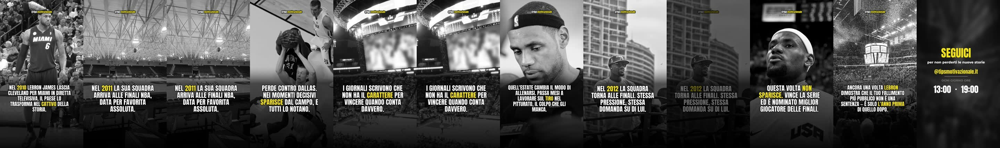
13:00
storia vera
Lebron — finale persa
Nel 2010 LeBron James lascia Cleveland per Miami, e lo annuncia in una diretta televisiva pensata
TIPSMOTIVAZIONALE
13 reel in coda · fino a venerdi 28 agosto 13:00 · due al giorno, alle 13:00 e alle 19:00
oggi

Lebron — finale persa
Nel 2010 LeBron James lascia Cleveland per Miami, e lo annuncia in una diretta televisiva pensata
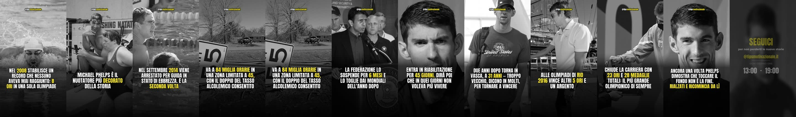
Phelps — toccare il fondo
Nel 2008, a Pechino, Michael Phelps vince otto ori in una sola Olimpiade. Diciassette gare in
domani
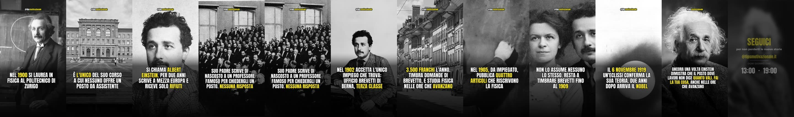
Einstein — due anni senza lavoro
Nel 1900 Albert Einstein si laurea in fisica al Politecnico di Zurigo.
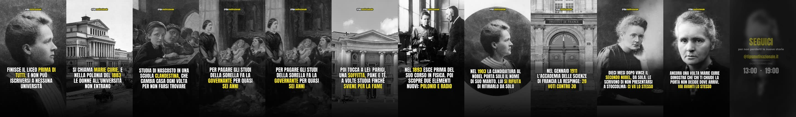
Curie — nessuna universita
Nel 1883 Maria Skłodowska finisce il liceo prima di tutti, con la medaglia d'oro.
lunedi 24 agosto
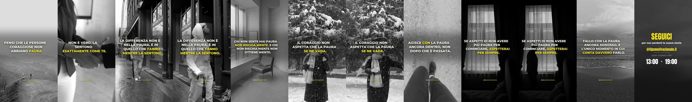
Riflessione — Coraggio
Pensi che le persone coraggiose non abbiano paura. Che ci sia qualcosa di diverso nel modo
Schumacher — ventuno anni
Nel 1996 Michael Schumacher firma per la Ferrari.
martedi 25 agosto
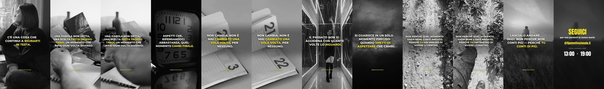
Riflessione — Guarire passato
C'è una cosa che continui a rigirarti in testa. Una parola non detta al momento giusto,
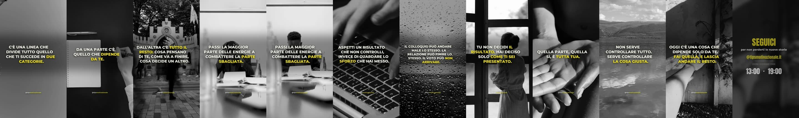
Riflessione — Controllo sforzo
C'è una linea che divide tutto quello che ti succede in due categorie.
mercoledi 26 agosto
Riflessione — Confronto solo ieri
Apri il telefono e in dieci secondi la tua giornata vale già meno.
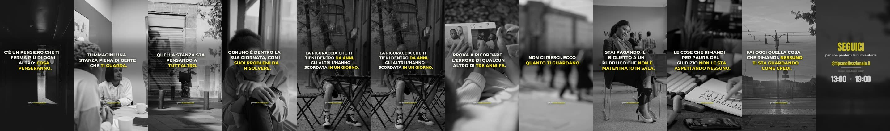
Riflessione — Nessuno ti guarda
C'è un pensiero che ti ferma più di ogni altro, e non è la pigrizia.
giovedi 27 agosto
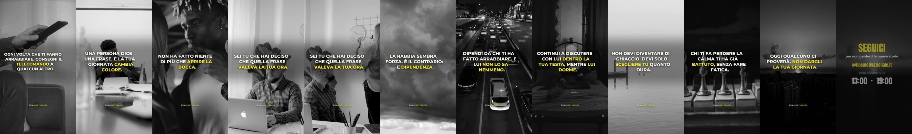
Riflessione — Rabbia telecomando
Ogni volta che ti fanno arrabbiare, stai consegnando il telecomando della tua giornata a qualcun altro.
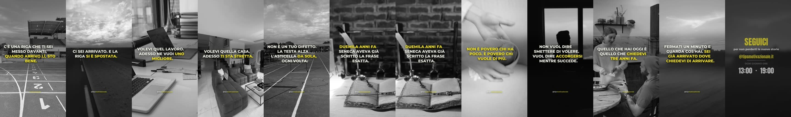
Riflessione — La riga si sposta
C'è una riga che ti sei messo davanti.
venerdi 28 agosto
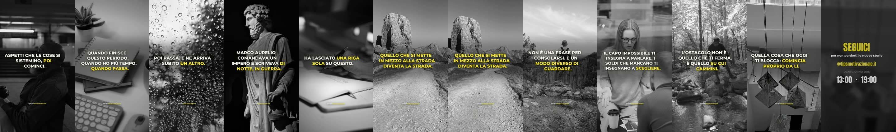
Riflessione — Ostacolo e la strada
Aspetti che le cose si sistemino, e poi cominci.
Dopo l'ultimo la coda è finita. Il lavoro notturno ne produce quattro ogni notte, quindi non dovrebbe succedere — ma se il Mac resta spento più giorni ricevi un avviso quando ne restano due.